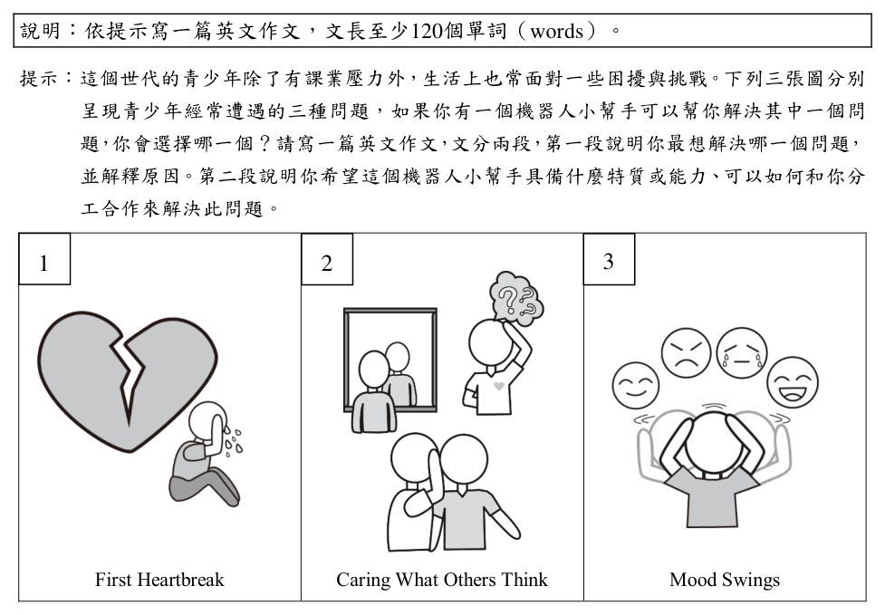

考點：中譯英，重點在「每逢」與「著名廟宇」的英文表達。參考翻譯：During every election season, politicians can always be seen visiting famous temples around the country.「every time + S + V」或「during election season」皆可。陷阱：「著名廟宇」勿誤譯為 famous church（廟宇為 temple）。（AI 整理需查證）
第 None 題
中譯英:除了祈求好的選舉結果，他們也希望展現對在地文化與習俗的尊重。
標準答案未收錄
詳解與考點
考點：中譯英，「除了……也……」結構及「展現尊重」的表達。參考翻譯：In addition to praying for good election results, they also hope to demonstrate their respect for local culture and customs.「in addition to」接動名詞；respect for 為固定搭配。陷阱：勿漏譯「在地」（local），或誤用 show disrespect。（AI 整理需查證）
第 None 題
英文作文:說明︰依提示寫一篇英文作文，文長至少120個單詞（words）。提示︰這個世代的青少年除了有課業壓力外，生活上也常面對一些困擾與挑戰。下列三張圖分別呈現青少年經常遭遇的三種問題，如果你有一個機器人小幫手可以幫你解決其中一個問題，你會選擇哪一個？請寫一篇英文作文，文分兩段，第一段說明你最想解決哪一個問題，並解釋原因。第二段說明你希望這個機器人小幫手具備什麼特質或能力、可以如何和你分工合作來解決此問題。 1 2 3 First Heartbreak Caring What Others Think Mood Swings
Watching the sun ______ from a sea of clouds is a must-do activity for all visitors to Ali Mountain.

（A）emerging
（B）flashing
（C）rushing
（D）floating
答案：（A）
詳解與考點
正解：題幹的 sun 與 from a sea of clouds 描述阿里山日出，空格需填能表「冉冉升起」的現在分詞。A：emerging 表「浮現、出現」，watch the sun emerging from a sea of clouds 指觀看太陽自雲海中冉冉升起，語意最合，故 A 為正解。
本題考點：天氣名詞辨析——humidity 指濕度，常與 high 搭配；語意判準——描述 hot and sticky 的身體感受時，選能造成黏膩感的高濕度，而非密度、循環或大氣。
第 5 題
Artwork created by truly great artists such as Picasso and Monet will no doubt ______ the test of time.
（A）stay
（B）take
（C）serve
（D）stand
答案：（D）
詳解與考點
正解：題幹的 test of time 觸發固定片語。D：stand the test of time 意為「經得起時間考驗」，形容畢卡索、莫內作品能歷久不衰，故 D 為正解。
A：stay 不與 the test of time 構成慣用搭配。
B：take the test 是「參加考試」，不表示經時間考驗。
C：serve the test of time 不是固定用法。
本題考點：固定片語——stand the test of time＝經得起時間考驗；搭配判斷——不可只依單字基本義猜測，須確認動詞與 test of time 的慣用組合。
第 6 題
In some countries, military service is ______ for men only; women do not have to serve in the military.
（A）forceful
（B）realistic
（C）compulsory
（D）distinctive
答案：（C）
詳解與考點
正解：題幹「women do not have to serve」說明男性服役是必須履行的義務。C：compulsory 意為「強制的、義務的」，compulsory military service 符合法律強制的語境，故 C 為正解。
A：forceful 是「強而有力的」，不表法律上的必須。
B：realistic 是「實際的」，語意不合。
D：distinctive 是「獨特的、有特色的」，不表義務。
本題考點：形容詞語意辨析——compulsory 表制度或法律強制；語境判斷——由 do not have to 的對照，判定空格須表「必須履行」。
第 7 題
The team complained that its leader always took the ______ for all the hard work done by the team members.
（A）advantage
（B）revenge
（C）remedy
（D）credit
答案：（D）
詳解與考點
正解：題幹的 always took the ______ for all the hard work 指領隊把團隊成果攬為己有，關鍵是固定搭配 take the credit for。D：credit 表「功勞、讚譽」，take the credit for 表「居功」，符合語意，故 D 為正解。
A：advantage 常用於 take advantage of，表「利用」，沒有 take the advantage for 的搭配，A 錯誤。
B：revenge 表「報復」，常用 take revenge on somebody for something，不能接在 take the ______ for 後表示居功，B 錯誤。
C：remedy 表「補救方法」，與攬走工作成果的語意不合，C 錯誤。
本題考點：固定片語辨析——take the credit for 表「因某事居功」；搭配判準——空格置於 take the ______ for 結構時，須選能與 for 引出成果或責任相連的名詞。
第 8 題
Located at the center of the city, the business hotel ______ not only good service but also convenient public transport.
（A）proposes
（B）contains
（C）promises
（D）confirms
答案：（C）
詳解與考點
正解：題幹說市中心的商務旅館具備良好服務與便利大眾運輸，題眼是旅館對旅客「保證提供」的賣點。C 的 promises 表「保證、承諾提供」，promises not only good service but also convenient public transport 語意自然，故 C 為正解。
As blood supplies have fallen to a critically low level, many hospitals are making an ______ for the public to donate blood.
（A）appeal
（B）approach
（C）operation
（D）observation
答案：（A）
詳解與考點
正解：句型 make an ______ for the public to donate blood 表示「向大眾呼籲捐血」，空格須填可與 make an 搭配、意為公開呼籲的名詞。A：appeal 意為「呼籲」，make an appeal for＋名詞／to V 表示提出呼籲，符合血液存量嚴重不足的情境，故 A 為正解。
B：approach 意為「方法、接近」，不構成 make an approach for the public to donate blood 的慣用搭配，B 錯誤。
C：operation 意為「操作、手術、運作」，不能表達公開呼籲，C 錯誤。
D：observation 意為「觀察、觀測」，不合醫院請大眾捐血的語意，D 錯誤。
本題考點：英文名詞搭配——make an appeal for＋名詞／to V 表「呼籲」；語境判準——當主詞因資源不足而請公眾採取行動時，選含「公開呼籲」語意的 appeal。
第 10 題
David felt disappointed when he found out that he could not choose his study partners, but would be ______ placed in a study group.
（A）eligibly
（B）randomly
（C）apparently
（D）consequently
答案：（B）
詳解與考點
正解：題幹的 could not choose his study partners 說明 David 無法自行選擇同組者，空格須填表示不由他決定的分配方式。B：randomly 表「隨機地」，be randomly placed in a study group 指被隨機分到學習小組，正確，故 B 為正解。
正解：題幹後接「sticks or pea shooters」說明敲門人攜帶的工具，分詞構句須能修飾主詞 the human alarms。C：Equipped with 意為「裝備有、配備著」，Equipped with sticks or pea shooters 合乎主詞與語意，故 C 為正解。
本題考點：篇章選填——先由空格位置判定詞性，a ___ day 需填形容詞；再以語境判義，描述改變人生的災難之日可用 fateful。
第 23 題
（A）passed on
（B）bridge
（C）sorrow
（D）hope
（E）departed
（F）mechanism
（G）housed
（H）manageable
（I）fateful
（J）brought forth
答案：（J）
詳解與考點
正解：J。題眼是被動句 The idea for the wind phone was first 23 by a Japanese garden designer，空格須填能表「構想被提出／催生」的過去分詞。J：brought forth 表「提出、催生」，可說這項構想最初由佐佐木提出，語意與被動結構都相符，故 J 為正解。
正解：題幹的「help him navigate through the 24」描述佐佐木面對表哥去世後，需要走過的情緒；空格須填能與 through 搭配、表示悲痛的名詞。C：sorrow 表「悲傷、悲痛」，navigate through the sorrow 意為「走過悲痛」，與全文哀悼主題一致，故 C 為正解。
A：passed on 表「去世」或「傳遞」，是動詞片語，不能作為 navigate through 後所需的悲痛名詞，A 錯誤。
F：mechanism 是名詞，意為「機制」，雖可置於介系詞 through 之後，但 navigate through the mechanism 表示「理解或處理某種機制」，不合此處走過喪親悲痛的語意，F 錯誤。
G：housed 表「安置、容納」，是動詞 house 的過去式或過去分詞，不能在 the 後作表示悲痛的名詞，G 錯誤。
H：manageable 是形容詞，意為「可處理的、可應付的」，不能在 the 後單獨作 navigate through 的受詞；此字應用於後文 renders the grieving process more manageable，H 錯誤。
I：fateful 是形容詞，意為「命運攸關的、重大的」，不能在 the 後單獨作名詞；此字適合修飾前文的 day，而非表示悲痛，I 錯誤。
J：brought forth 表「提出、產生」，是動詞片語的過去式或過去分詞，不能作介系詞 through 後的名詞受詞，也不表示喪親的情緒，J 錯誤。
本題考點：文意選填的詞性與搭配——先由 through 判斷空格須為名詞，再以語境選 sorrow（悲痛）；篇章主題可縮小詞義範圍，但仍須回到句法位置驗證。
第 25 題
（A）passed on
（B）bridge
（C）sorrow
（D）hope
（E）departed
（F）mechanism
（G）housed
（H）manageable
（I）fateful
（J）brought forth
答案：（G）
詳解與考點
正解：題眼是 The booth he built ___ only an old dial phone，空格需填可表示「亭內容納、放置」的過去式動詞。G：housed 表「容納、安置」，The booth housed only an old dial phone 意為電話亭內只有一部舊式撥盤電話，故 G 為正解。
A：passed on 表「傳遞、去世」，不能表示電話亭容納物品。
B：bridge 是名詞「橋梁」或動詞「連結」，不合此處語意。
C：sorrow 是名詞「悲傷」，詞性不合。
D：hope 是名詞「希望」或動詞「希望」，詞性與語意不合。
E：departed 是形容詞「已離世的」，不能作此句主要動詞。
F：mechanism 是名詞「機制」，詞性不合。
H：manageable 是形容詞「可承受的」，詞性不合。
I：fateful 是形容詞「命運攸關的」，詞性不合。
J：brought forth 表「提出、產生」，不能自然表示電話亭內放有一部電話。
本題考點：篇章選填——先由主詞 The booth 與受詞 an old dial phone 判斷需及物動詞；house 可作動詞表「容納、安置」，用過去式 housed 描述已建成的電話亭。
第 26 題
（A）passed on
（B）bridge
（C）sorrow
（D）hope
（E）departed
（F）mechanism
（G）housed
（H）manageable
（I）fateful
（J）brought forth
答案：（A）
詳解與考點
正解：題幹的關鍵句是 thoughts couldn’t be ______ through a regular phone line，空格需填能與 through a phone line 搭配、表「傳遞」的過去分詞。A：passed on 表「傳遞、傳達」，be passed on through a regular phone line 符合語境，也呼應薩薩基希望思念能隨風傳送的主題，故 A 為正解。
B：bridge 是名詞「橋梁」，不能在 be 後直接作過去分詞使用，B 錯誤。
C：sorrow 是名詞「悲傷」，不能填入 be ______ through 的被動語態結構，C 錯誤。
D：hope 是名詞或動詞「希望」，放在 be 後且接 through a phone line，皆不合句型與語意，D 錯誤。
E：departed 表「離去的」，通常形容人或事物已離開，不能表達思念經電話線傳送，E 錯誤。
F、G、H、I、J：F：mechanism 是名詞「機制」，不能填入 be ______ through 的被動語態結構。G：housed 是過去分詞，表「容納、安置」，雖可接在 be 後，卻不能表示思念經電話線「傳遞」。H：manageable 是形容詞「可處理的、可應付的」，與 through a regular phone line 的傳送情境不合。I：fateful 是形容詞「命中注定的、重大的」，既不構成被動語態，也不能表示傳遞。J：brought forth 是過去分詞片語，表「產生、提出」，不表示訊息經由電話線傳送。
本題考點：文意選填——依空格前後的語法位置判定詞性，be＋過去分詞可構成被動語態；動詞片語搭配——pass on 表「傳遞、傳達」，與 through a phone line 的傳送情境相合。
第 27 題
（A）passed on
（B）bridge
（C）sorrow
（D）hope
（E）departed
（F）mechanism
（G）housed
（H）manageable
（I）fateful
（J）brought forth
答案：（H）
詳解與考點
正解：題眼是 renders the grieving process more ___ for him，render A adjective 表「使 A 變得……」，空格需要形容詞，且語意是悲傷較能面對。H：manageable 表「可處理的、可承受的」，使哀傷歷程更 manageable，故 H 為正解。
A：passed on 是動詞片語或過去分詞，不能作此處所需的形容詞。
B：bridge 是名詞或動詞，不合詞性。
C：sorrow 是名詞「悲傷」，不合詞性。
D：hope 是名詞「希望」或動詞，不能直接放在 more 後；它看起來對，是因為電話亭帶來希望，但句型要求形容詞。
正解：題幹說風之電話亭讓人向逝去親友說話，空格後是 between the living and the dead，需填表連結兩端的名詞。B：bridge 表「橋梁」，a bridge between the living and the dead 指生者與死者之間的連結，符合全文主旨，故 B 為正解。
A：passed on 表「傳遞」或「去世」，詞性與 a 後的名詞位置不合，錯誤。
C：sorrow 表「悲傷」，不能構成兩者之間的連結，錯誤。
D：hope 表「希望」，雖與哀傷情境相關，卻不能與 between the living and the dead 搭配，錯誤。
E：departed 表「離世的」，是形容詞或名詞，不能表連接兩端的事物，錯誤。
F：mechanism 表「機制」，語意過於抽象，不能自然構成生死兩界之間的 bridge，錯誤。
G：housed 表「安置、容納」，為動詞過去式或分詞，詞性不合，錯誤。
H：manageable 表「可處理的」，是形容詞，詞性與語意皆不合，錯誤。
I：fateful 表「命中注定的」，是形容詞，不能填入此名詞位置，錯誤。
J：brought forth 表「產生、帶來」，為動詞片語，詞性不合，錯誤。
本題考點：篇章選填——先由冠詞 a 與介系詞片語判定需要單數名詞，再用搭配驗證；a bridge between A and B 表 A 與 B 之間的連結。
第 29 題
（A）passed on
（B）bridge
（C）sorrow
（D）hope
（E）departed
（F）mechanism
（G）housed
（H）manageable
（I）fateful
（J）brought forth
答案：（F）
詳解與考點
正解：題幹「Grieving is a natural ___ for coping with loss」需要能表應對失落方式的名詞。F：mechanism 意為「機制」，a natural mechanism for coping with loss 指面對失去所自然運作的因應機制，故 F 為正解。
本題考點：篇章語意與句法銜接——空格位於 is always there 前時須能作名詞主詞，再以後文 believe 與 messages will reach the deceased 檢驗語意；能表正向期待且合於句法者為 hope。
第 31 題
（A）For example, an injured runner might end up cycling and swimming instead of running.
（B）Over time, researchers have come to realize the importance of exercising when injured.
（C）Many suggest that most patients can continue with the sport they love.
（D）This seems to run counter to the common practice.
答案：（D）
詳解與考點
正解：第 31 格前寫醫師受傷後仍去跑步且感覺不錯，後文則說一般人扭傷後通常被建議疼痛消失前不要運動；空格須承接這個與常規相反的情況。D 的 This seems to run counter to the common practice 表「這似乎與一般做法相悖」，能以 This 指回前句並引出下文，故 D 為正解。
A：For example, an injured runner might end up cycling and swimming instead of running. 是交叉訓練的具體例子，應接在後文談 cross-train 之後，不適合放在尚未介紹交叉訓練的第 31 格，A 錯誤。
B：Over time, researchers have come to realize the importance of exercising when injured. 直接提出研究結論，缺少指回前句個案與轉折的銜接作用，B 錯誤。
C：Many suggest that most patients can continue with the sport they love. 可引介後續專家意見，也能讓後文的 They 回指 Many；但放在第 31 格會削弱前句個案與下一句一般做法之間所需的直接對比，銜接不如 D 緊密。
（A）For example, an injured runner might end up cycling and swimming instead of running.
（B）Over time, researchers have come to realize the importance of exercising when injured.
（C）Many suggest that most patients can continue with the sport they love.
（D）This seems to run counter to the common practice.
答案：（C）
詳解與考點
正解：後文的 They 必須有清楚的複數先行詞，且句意應承接受傷者仍可持續運動的建議。C：Many suggest that most patients can continue with the sport they love，其中 Many 可作後文 They 的先行詞，語意最連貫，故 C 為正解。
A：For example, an injured runner might end up cycling and swimming instead of running 是單一例子，無法為後文 They 提供複數先行詞，錯誤。
B：Over time, researchers have come to realize the importance of exercising when injured 雖有 researchers，卻著重研究認知，與後文承接的建議者語意不合，錯誤。
D：This seems to run counter to the common practice 的 This 缺少明確指涉內容，也不能提供 They 的先行詞，錯誤。
本題考點：代名詞銜接——先找 They 的複數先行詞；篇章連貫——先行句須同時提供可被代名詞承接的對象與後文所需的建議語意。
第 33 題
（A）For example, an injured runner might end up cycling and swimming instead of running.
（B）Over time, researchers have come to realize the importance of exercising when injured.
（C）Many suggest that most patients can continue with the sport they love.
（D）This seems to run counter to the common practice.
答案：（A）
詳解與考點
正解：第 33 格需要承接 cross-train 的概念並提供具體例子。A：For example, an injured runner might end up cycling and swimming instead of running，舉出受傷跑者改以騎自行車與游泳訓練的例子，正好說明交叉訓練，故 A 為正解。
B：Over time, researchers have come to realize the importance of exercising when injured 是研究觀察，未具體說明 cross-train 的做法，錯誤。
C：Many suggest that most patients can continue with the sport they love 是概括主張，未舉交叉訓練的例子，錯誤。
D：This seems to run counter to the common practice 是轉折評語，缺少可指涉的前述內容，不能直接引出例子，錯誤。
本題考點：篇章結構——看到 For example 應接能具體例證前文概念的句子；語意銜接——cross-train 指以不同運動替代原運動訓練。
第 34 題
（A）For example, an injured runner might end up cycling and swimming instead of running.
（B）Over time, researchers have come to realize the importance of exercising when injured.
（C）Many suggest that most patients can continue with the sport they love.
（D）This seems to run counter to the common practice.
答案：（B）
詳解與考點
正解：第 34 格前文說多位專家雖提出不同做法，仍達成「適度運動可加速復原」的共識；空格後的 Thus 要承接一項支持該共識的整體理由。B：Over time, researchers have come to realize the importance of exercising when injured 表「隨著時間，研究者逐漸認識到受傷時運動的重要性」，可作為後文建議病人持續活動的科學依據，故 B 為正解。
A：For example, an injured runner might end up cycling and swimming instead of running 是交叉訓練的例子，應接在介紹 cross-train 的位置，不適合放在總結前，A 錯誤。
C：Many suggest that most patients can continue with the sport they love 與前文不同專家的具體建議重複，且未能自然導向研究共識，C 錯誤。
D：This seems to run counter to the common practice 缺乏明確指涉對象，且語意應用來轉折傳統作法，不適合置於此處總結，D 錯誤。
What does “this pioneering procedure” in the second paragraph refer to?
（A）100% Fish’s mission.
（B）Oddsson’s skin transplant.
（C）A fundamental change in seafood business.
（D）A new approach to protect the environment.
答案：（B）
詳解與考點
正解：題眼是 this pioneering procedure 緊接在「transplanting codfish skins onto human bodies」之後，代名詞 this 要回指最近且具體的醫療處置；B 的 Oddsson’s skin transplant 即把鱈魚皮移植到奧德森身上的手術，故 B 為正解。
A：100% Fish’s mission 是推動魚類完整利用的整體計畫，不是前句所述的具體手術。
C：a fundamental change in seafood business 是計畫追求的產業層次改變，範圍過大，並非 procedure 的直接所指。
D：a new approach to protect the environment 是對計畫效益的概括，不是將魚皮移植到人體的醫療程序。它看起來對，是因為 100% Fish 確實旨在提升環境效率，但 this pioneering procedure 回指的是緊鄰前文的植皮手術。
Which of the following is true according to the passage?
（A）Iceland has increased their fish catch by 30% in the last 20 years.
（B）Petur Oddsson was an important member of the Icelandic project.
（C）Cross-field collaboration has proved to be very fruitful for 100% Fish.
（D）100% Fish is a big international enterprise marketing seafood products.
答案：（C）
詳解與考點
正解：題幹問細節正確性，關鍵句是 Icelandic success is accomplished largely through cooperative efforts across various industries。C：跨領域共享知識與資訊，促成加工改善及創新產品，符合文章所說 100% Fish 的成果，故 C 為正解。
D：第 4 段轉而說明跨產業合作及其帶來的效益，插入句中的 fish 各部位利用是前段產品例證的總結，不是本段合作機制的結語，D 錯誤。它看起來對，是因為第 4 段也在總結計畫成效，但插入句總結的是「利用哪些部位」，不是「如何合作」。
本題考點：閱讀句子插入——先找插入句的指涉詞與概括範圍，含「almost nothing of a fish」的句子須接在各魚體部位用途的例證之後；段落結語判準——結語應收束同段細節，不能跳接下一段的新主題。
第 47 題
下列簡短敘述摘記上方文章重點。請從文章中找出最適當的單詞（word）填入下列句子空格中，並視句型結構需要做適當的字形變化，使句子語意完整、語法正確，並符合全文文意。每格限填一個單詞（word）。（填充，4分） Studies show that animals like jackdaws and turtle ants are able to use 47 intelligence in both solving problems and 48 to new challenging environment.
下列簡短敘述摘記上方文章重點。請從文章中找出最適當的單詞（word）填入下列句子空格中，並視句型結構需要做適當的字形變化，使句子語意完整、語法正確，並符合全文文意。每格限填一個單詞（word）。（填充，4分） Studies show that animals like jackdaws and turtle ants are able to use 47 intelligence in both solving problems and 48 to new challenging environment.
標準答案未收錄
詳解與考點
考點：克漏字填充需從文章提取詞彙並做字形變化。文章指出海龜蟻能在路徑被破壞後重新建立網絡，對應「adapt to new challenging environment」；空格 48 應填 adapt（動名詞 adapting）。陷阱：勿填 adjust（文中未出現）或誤用字形（adapted 不合句型結構）。（AI 整理需查證）
第 49 題（多選）
From (A) to (F) below, choose the ONES that are true for both jackdaws and turtle ants.（多選題，4分）
（A）They have special strategies to locate food sources.
（B）They have complex interactions led by a leader.
（C）They share information with their group members.
（D）They establish rules to stay away from enemies.
（E）They change their nesting sites from time to time.
（F）They show behavior governed by a unique system of communication.
答案：（C）（F）
詳解與考點
正解：題幹要求找出寒鴉與蜜蟻「共同」具備的特性，必須同時在兩段文本找到依據。C：寒鴉依附近鳥類傳來的資訊調整飛行；蜜蟻以信息素路徑讓其他螞蟻跟隨，兩者都與群體成員分享資訊，故 C 正確。F：寒鴉以固定距離內的資訊協調群飛，蜜蟻以信息素路徑形成溝通網絡，兩者皆呈現由獨特溝通系統支配的行為，故 F 正確。
What is the “disturbance” for jackdaws mentioned in the passage?（簡答，2分） ________________________________________________________________________________
標準答案未收錄
詳解與考點
考點：簡答題需從文章找出特定概念對應的詞彙。文章明確提到「if a predator (such as a fox) is present」時寒鴉飛行模式改變——故 disturbance 即指「掠食者（天敵）的出現」，答案為 a predator (such as a fox) 或 the presence of a predator。陷阱：勿答 wind or rain（那是龜蟻的干擾因素）。（AI 整理需查證）